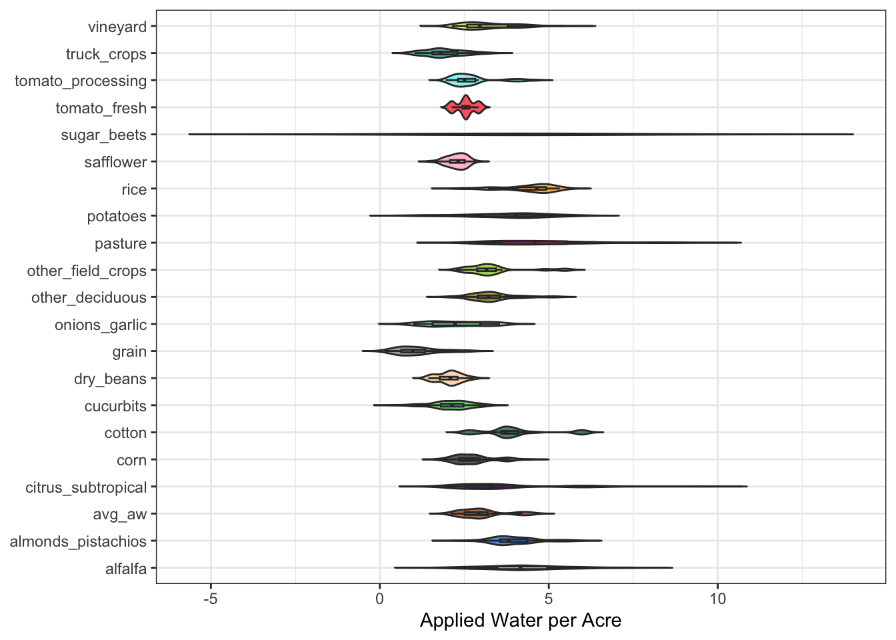
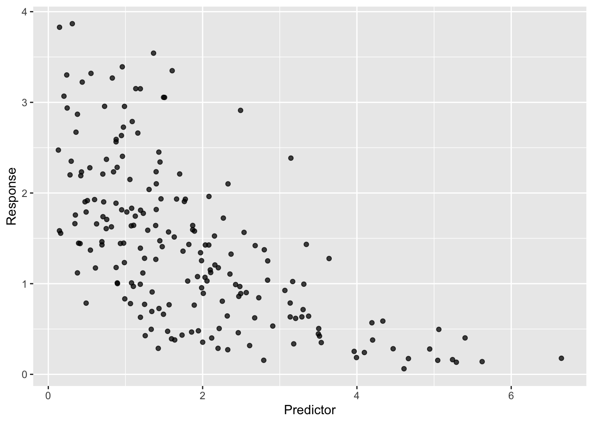

# Clear the environment
rm(list = ls())
# Load in libraries
pacman::p_load(tidyverse, dplyr, here, readxl, pals, broom, knitr,
janitor, dagitty, ggdag, ggplot2, kableExtra)How Crop Type and Climate Zone Influence Agricultural Water Use in California
MEDS
R
About
Dataset Description
California produces a large portion of the nation’s fruits, nuts, and vegetables. Irrigated agriculture dominates water use in the state, and the amount of water applied varies by crop type, hydrologic region, and year.1
This dataset provides annual estimates of:
- Applied Water per Acre
- Hydrologic Regions
- 20 Crop Categories
- Years 2016 - 2020
In this blog post, we would like to dive in to understand how climate region, crop type, and year would influence our Gamma response variable, applied water per acre.
Data Access
California Department of Water Sources - Statewide Agricultural Land & Water Use (2016 -2020)
Clear the Environment and Load Libraries
Load and Explore Data
In this section, we load the raw Excel file and prepare it for analysis. Real datasets often contain unnecessary columns, inconsistent variable names, or values that must be converted into usable formats. We use functions like clean_names(), select(), and pivot_longer() to transform the data into a tidy structure, where each row corresponds to a single crop-year-region combination. Finally, we filter out missing or zero values so the Gamma model, which requires positive continuous outcomes, can be correctly fit.
# Read in data and clean the name to snake case and drop unused columns
water_raw <- read_excel(here("posts", "crop-water-gamma", "data",
"agricultural_water_use_data_2016_2020.xlsx"),
sheet = "Statewide_AW_Unit", skip = 1) %>%
clean_names() %>%
select(!starts_with("x"))
# Pivot all crop columns, convert variable types, and drop missing rows
water_long <- water_raw %>%
pivot_longer(cols = -c(year, hr),
names_to = "crop",
values_to = "aw_per_acre") %>%
mutate(aw_per_acre = as.numeric(aw_per_acre),
year = as.integer(year),
hr = as.factor(hr),
crop = as.factor(crop)) %>%
filter(!is.na(aw_per_acre),
aw_per_acre > 0)Exploratory Visualization
Before fitting any statistical model, it is essential to understand the distribution of the variables. The violin plot visualizes how applied water per acre varies across crop types and reveals skewness, outliers, and general patterns. This helps justify the modeling choices and provides intuition about which predictors might influence water use.
# Create a consistent color palette for crop types
crop_cols <- setNames(alphabet()[1:length(levels(water_long$crop))],
levels(water_long$crop))
water_long %>%
ggplot(aes(x = crop, y = aw_per_acre, fill = crop)) +
geom_violin(trim = FALSE, alpha = 0.7) +
geom_boxplot(width = 0.1, outlier.shape = NA, alpha = 0.5) +
scale_fill_manual(values = crop_cols) +
coord_flip() +
theme_bw() +
theme(legend.position = "none",
plot.title = element_text(size = 14, face = "bold", hjust = 0),
axis.title.y = element_blank()) +
labs(y = "Applied Water per Acre")
DAG (Directed Acyclic Graph)
A Directed Acyclic Graph clarifies our assumptions about how variables influence each other. Let’s dive into our variables:
Crop Types influence water use because different crops require different irrigation levels
The hydrologic region affects crop type because different regions have different crops
Both year and hydrologic influence applied water per acre due to climate and resource availability
These relationships reflect scientific justification, including crop, hydrological region, and predictors in the regression model.
Code
# Draw a DAG
water_dag <- dagitty("dag {
hr -> crop
hr -> aw_per_acre
year -> crop
year -> aw_per_acre
crop -> aw_per_acre}")
# Assign coordinate for each variable nodes
coordinates(water_dag) <- list(
x = c(hr = 0, year = 2, crop = 1, aw_per_acre = 3),
y = c(hr = 2, year = 2, crop = 1, aw_per_acre = 1))
# Assign color for the nodes
node_colors <- c(hr = "#7F95D1", year = "#FF82A9",
crop = "#FA824C", aw_per_acre = "#1B998B")
# Plot DAG
ggdag(water_dag, text = FALSE, node = FALSE) +
geom_dag_node(aes(fill = name), size = 12, shape = 21, color = "white") +
geom_dag_edges() +
scale_fill_manual(values = node_colors, name = "Variables",
labels = c(aw_per_acre = "Applied Water per Acre",
crop = "Crop Type",
hr = "Hydrologic Region",
year = "Year")) +
theme_minimal() +
theme(legend.title = element_text(size = 15, face = "bold", hjust = 0.5),
legend.position = "right",
legend.text = element_text(size = 12, face = "bold"),
axis.title = element_blank(),
axis.text = element_blank(),
axis.ticks = element_blank(),
panel.grid = element_blank(),
panel.background = element_blank(),
plot.margin = margin(10, 10, 10, 10))
The DAG summarizes our assumptions about how crop type, hydrologic region, and year influence applied water per acre. Hydrologic region influences crop type because certain crops grow better in specific climates and soils. Both hydrologic region and year influences the response variable due to variation in precipitation, groundwater availability, and climate condition. Year affects crop distribution annually as they response directly to the market and climate.
Statistical Modeling
Why Gamma?
The Gamma Distribution with a log link works best with this data because the applied water per acre is positive and continuous. A positive continuous variable is a numerical value that can take any real number that is greater than zero.
The distribution is right-skewed, meaning most values are small, and a few very extreme values stretch the tail to the right, causing the data to cluster near the lower end and occasional extreme values that create an asymmetrical shape with a long right tail. Also, because it can only be positive.
A multiplicative effect shows scientific results that change the outcome in proportion to the change. Rather than adding or subtracting a fixed amount, we can view the numbers as a percentage difference or twice as large. Multiplying the response is more meaningful than adding a constant amount, which makes the Gamma model fit right in.
Gamma Model in Statistical Notation
The mathematical form of the model explains this notation:
\[ {Applied~Water} \sim Gamma(\mu, \phi) \\\\ log(\mu) = \beta_0 + \beta_1 * (Crop) + \beta_2 * (Hydrologic~Region) + \beta_3 *(Year) \] The linear predictor for the mean is on the log scale, and the parameter of Gamma consists of the following:
\(\mu\) is expected applied water per acre
\(\phi\) is shape parameter and it controls with its size.
Larger \(\phi\) - distribution becomes more symmetric
Smaller \(\phi\) - distribution becomes more right-skewed and more spread out
Fit Model to Simulated Data
To demonstrate how the Gamma model works under the known parameters, we simulated 200 observations from a Gamma distribution with a log-linear mean structure. We set the \(\beta_0 = 1\) and a slope \(\beta_1 = -0.4\).
# Initialize simulated random data
set.seed(123)
n <- 200 # Sample Size
beta0 <- 1 # Intercept
beta1 <- -0.4 # Slope, controls strength and direction
phi <- 4 # Gamma Shape
# Simulated a positive and right-skewed predictor
predictor <- rgamma(n, shape = 2, scale = 1)
# Simulated Gamma-distribute response with mean
response <- rgamma(n, shape = phi,
scale = exp(beta0 + beta1 * predictor) / phi)
sim_data <- tibble(predictor, response)
sim_model <- glm(response ~ predictor,
data = sim_data,
family = Gamma(link = "log"))
sim_results <- tidy(sim_model, conf.int = TRUE)
sim_results %>%
kbl(digits = 3,
caption = "Gamma Regression Coefficients from Simulated Data (with 95% CI)",
col.names = c("Term", "Estimate", "Std. Error",
"Statistic", "p-value",
"CI Lower", "CI Upper")) %>%
kable_styling(bootstrap_options = c("striped", "hover", "condensed"),
full_width = FALSE, position = "center") %>%
row_spec(0, bold = TRUE, background = "#f0f0f0")| Term | Estimate | Std. Error | Statistic | p-value | CI Lower | CI Upper |
|---|---|---|---|---|---|---|
| (Intercept) | 1.039 | 0.063 | 16.485 | 0 | 0.913 | 1.167 |
| predictor | -0.435 | 0.028 | -15.321 | 0 | -0.491 | -0.376 |
Parameter Recovery for Simulated Data
During the simulation, the true parameters were:
- Intercepts: \(\beta_0 = 1\)
- Slope: \(\beta_1 = -0.4\)
The fitted Gamma regression model estimated coefficients very close to the true values we selected. The intercept estimate is approximately 1, and the slope estimate is approximately -0.4, indicating that the Gamma model with a log link successfully recovers the underlying parameters when the model assumptions hold. The simulation validates that the Gamma model applies to the water data.
# Plot the simulated data
ggplot(sim_data, aes(predictor, response)) +
geom_point(alpha = 0.75) +
labs(x = "Predictor", y = "Response") +
theme(plot.title = element_text(size = 14, face = "bold", hjust = 0.5))
ggplot(sim_data, aes(x = predictor, y = response)) +
geom_point(alpha = 0.5) +
geom_smooth(method = "glm",
method.args = list(family = Gamma(link = "log")),
se = TRUE, color = "red", fill = "lightblue", size = 1.1) +
theme_bw() +
labs(x = "Predictor", y = "Response")
Fit to Real Life Data
Code
# Fit Gamma Regression using log link to model applied water per acre
water_gamma_model <- glm(aw_per_acre ~ crop + hr + year,
family = Gamma(link = "log"),
data = water_long)
# Make the table presentable
water_results <- tidy(water_gamma_model, conf.int = TRUE) %>%
mutate(term = gsub("crop", "Crop: ", term),
term = gsub("hr", "Region: ", term)) %>%
kable(format = "html",
caption = "Gamma Regression Coefficients with 95% Confidence Intervals",
col.names = c("Term", "Estimate", "Std. Error", "Statistic", "p-value",
"CI (Lower)", "CI (Upper)"), digits = 3) %>%
kable_styling(bootstrap_options = c("striped", "hover", "condensed"),
full_width = FALSE, position = "center") %>%
row_spec(0, bold = TRUE, background = "#f0f0f0")
# Show table
water_results| Term | Estimate | Std. Error | Statistic | p-value | CI (Lower) | CI (Upper) |
|---|---|---|---|---|---|---|
| (Intercept) | 31.163 | 10.521 | 2.962 | 0.003 | 10.738 | 51.587 |
| Crop: almonds_pistachios | -0.089 | 0.044 | -2.011 | 0.045 | -0.174 | -0.002 |
| Crop: avg_aw | -0.337 | 0.042 | -8.121 | 0.000 | -0.419 | -0.256 |
| Crop: citrus_subtropical | -0.185 | 0.043 | -4.321 | 0.000 | -0.268 | -0.101 |
| Crop: corn | -0.420 | 0.042 | -9.949 | 0.000 | -0.502 | -0.337 |
| Crop: cotton | -0.134 | 0.053 | -2.511 | 0.012 | -0.237 | -0.029 |
| Crop: cucurbits | -0.687 | 0.043 | -16.039 | 0.000 | -0.771 | -0.603 |
| Crop: dry_beans | -0.677 | 0.046 | -14.880 | 0.000 | -0.766 | -0.588 |
| Crop: grain | -1.384 | 0.042 | -33.322 | 0.000 | -1.466 | -1.303 |
| Crop: onions_garlic | -0.663 | 0.043 | -15.367 | 0.000 | -0.748 | -0.579 |
| Crop: other_deciduous | -0.232 | 0.042 | -5.524 | 0.000 | -0.314 | -0.149 |
| Crop: other_field_Crop: s | -0.240 | 0.042 | -5.688 | 0.000 | -0.322 | -0.157 |
| Crop: pasture | 0.102 | 0.042 | 2.463 | 0.014 | 0.021 | 0.184 |
| Crop: potatoes | -0.147 | 0.045 | -3.280 | 0.001 | -0.235 | -0.059 |
| Crop: rice | 0.084 | 0.058 | 1.454 | 0.146 | -0.029 | 0.199 |
| Crop: safflower | -0.582 | 0.047 | -12.367 | 0.000 | -0.674 | -0.489 |
| Crop: sugar_beets | -0.205 | 0.158 | -1.301 | 0.194 | -0.501 | 0.119 |
| Crop: tomato_fresh | -0.585 | 0.114 | -5.140 | 0.000 | -0.801 | -0.355 |
| Crop: tomato_processing | -0.460 | 0.045 | -10.110 | 0.000 | -0.549 | -0.371 |
| Crop: truck_Crop: s | -0.767 | 0.042 | -18.462 | 0.000 | -0.849 | -0.685 |
| Crop: vineyard | -0.294 | 0.043 | -6.895 | 0.000 | -0.378 | -0.211 |
| Region: 02_San Francisco Bay | 0.007 | 0.037 | 0.181 | 0.856 | -0.066 | 0.080 |
| Region: 03_Central Coast | 0.038 | 0.036 | 1.062 | 0.289 | -0.033 | 0.109 |
| Region: 04_South Coast | 0.238 | 0.036 | 6.528 | 0.000 | 0.166 | 0.309 |
| Region: 05_Sacramento River | 0.184 | 0.036 | 5.189 | 0.000 | 0.115 | 0.254 |
| Region: 06_San Joaquin River | 0.203 | 0.035 | 5.737 | 0.000 | 0.134 | 0.273 |
| Region: 07_Tulare Lake | 0.202 | 0.036 | 5.635 | 0.000 | 0.131 | 0.272 |
| Region: 08_North Lahontan | 0.120 | 0.044 | 2.728 | 0.007 | 0.034 | 0.206 |
| Region: 09_South Lahontan | 0.561 | 0.038 | 14.857 | 0.000 | 0.487 | 0.635 |
| Region: 10_Colorado River | 0.578 | 0.036 | 16.115 | 0.000 | 0.508 | 0.648 |
| Region: State | 0.243 | 0.035 | 6.869 | 0.000 | 0.173 | 0.312 |
| year | -0.015 | 0.005 | -2.847 | 0.005 | -0.025 | -0.005 |
Coefficient Plot
tidy(water_gamma_model, conf.int = TRUE) %>%
filter(grepl("^hr", term)) %>%
mutate(term = gsub("hr", "Region ", term),
term = reorder(term, estimate)) %>%
ggplot(aes(x = term, y = estimate)) +
geom_point(size = 2) +
geom_errorbar(aes(ymin = conf.low, ymax = conf.high), width = 0.15) +
coord_flip() +
theme_bw() +
labs(x = "Hydrologic Region", y = "Estimate (log scale)")
Inference
We are interested in if hydrologic region is associated with differences in applied water per acre, after adding all consideration for crop types and year.
Explain Hypothesis in Plain-Language
Some hydrologic regions require more applied water per acre than others, even after adjusting for crop type and year.
Hypothesis
\[ H_0: \beta_r = 0 \quad \text{(no difference in expected water use)} \\ H_A: \beta_r \neq 0 \quad \text{(a region differs from the baseline region)} \]
Visualizing Hypothesis
# Plot
water_long %>%
ggplot(aes(x = hr, y = aw_per_acre)) +
geom_boxplot(fill = "#7F95D1") +
labs(title = "Applied Water per Acre by Hydrologic Region",
x = "Hydrologic Region",
y = "Applied Water per Acre") +
theme_minimal() +
theme(axis.text.x = element_text(angle = 45, hjust = 1,size = 10))
Conclusion
The box plot of applied water per acre by hydrologic region shows that the Colorado River and South Lahontan regions have the highest median water use. In contrast, regions such as San Francisco and the Central Coast show noticeably low levels. These figures align with the coefficient plot from the Gamma regression model. The hydrologic region is an essential predictor of applied water per acre, even without accounting for other factors.
Reference
California Department of Food and Agriculture. (2024). California agricultural production statistics [web page]. Available: https://www.cdfa.ca.gov/statistics. [Accessed: Dec. 4, 2025]
California Department of Water Resources. (2020). Statewide Agricultural Water Use Data, 2016–2020 [data file]. Available: https://data.ca.gov/dataset/statewide-agricultural-water-use-data-2016-2020. [Accessed: Dec. 4, 2025]
Wikimedia Commons. (2024). Sisteme-de-irigatie.jpg [image file]. Available: https://commons.wikimedia.org/w/index.php?title=File:Sisteme-de-irigatie.jpg&oldid=838313884. [Accessed: Dec. 4, 2025]
Footnotes
California Department of Food and Agriculture. (2024). California agricultural production statistics [web page]. Available: https://www.cdfa.ca.gov/statistics. [Accessed: Dec. 4, 2025]↩︎
Citation
BibTeX citation:
@online{2025,
author = {},
title = {How {Crop} {Type} and {Climate} {Zone} {Influence}
{Agricultural} {Water} {Use} in {California}},
date = {2025-12-04},
url = {https://jwonyk.github.io/posts/crop-water-gamma/},
langid = {en}
}
For attribution, please cite this work as:
“How Crop Type and Climate Zone Influence Agricultural Water Use
in California.” 2025. December 4, 2025. https://jwonyk.github.io/posts/crop-water-gamma/.